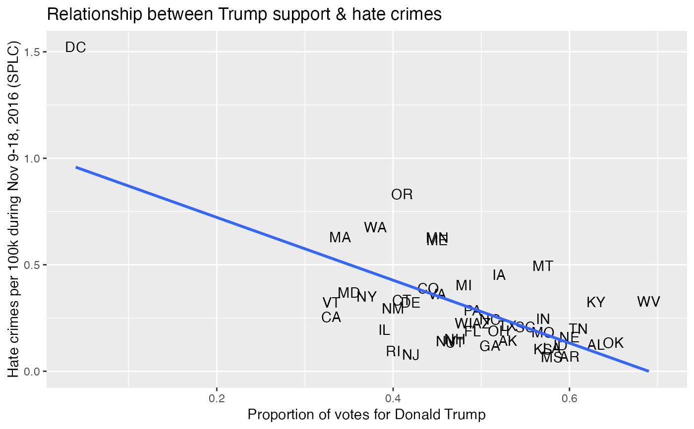

The raw data behind the story "Higher Rates Of Hate Crimes Are Tied To Income Inequality" https://fivethirtyeight.com/features/higher-rates-of-hate-crimes-are-tied-to-income-inequality/.
hate_crimes
A data frame with 51 rows representing US states and DC and 13 variables:
State name
State abbreviation
Median household income, 2016
Share of the population that is unemployed (seasonally adjusted), Sept. 2016
Share of the population that lives in metropolitan areas, 2015
Share of adults 25 and older with a high-school degree, 2009
Share of the population that are not U.S. citizens, 2015
Share of white residents who are living in poverty, 2015
Gini Index, 2015
Share of the population that is not white, 2015
Share of 2016 U.S. presidential voters who voted for Donald Trump
Hate crimes per 100,000 population, Southern Poverty Law Center, Nov. 9-18, 2016
Average annual hate crimes per 100,000 population, FBI, 2010-2015
See https://github.com/fivethirtyeight/data/tree/master/hate-crimes
library(ggplot2) ggplot(hate_crimes, aes(x = share_vote_trump, y = hate_crimes_per_100k_splc)) + geom_text(aes(label = state_abbrev)) + geom_smooth(se = FALSE, method = "lm") + labs(x = "Proportion of votes for Donald Trump", y = "Hate crimes per 100k during Nov 9-18, 2016 (SPLC)", title = "Relationship between Trump support & hate crimes")#> Warning: Removed 4 rows containing non-finite values (stat_smooth).#> Warning: Removed 4 rows containing missing values (geom_text).